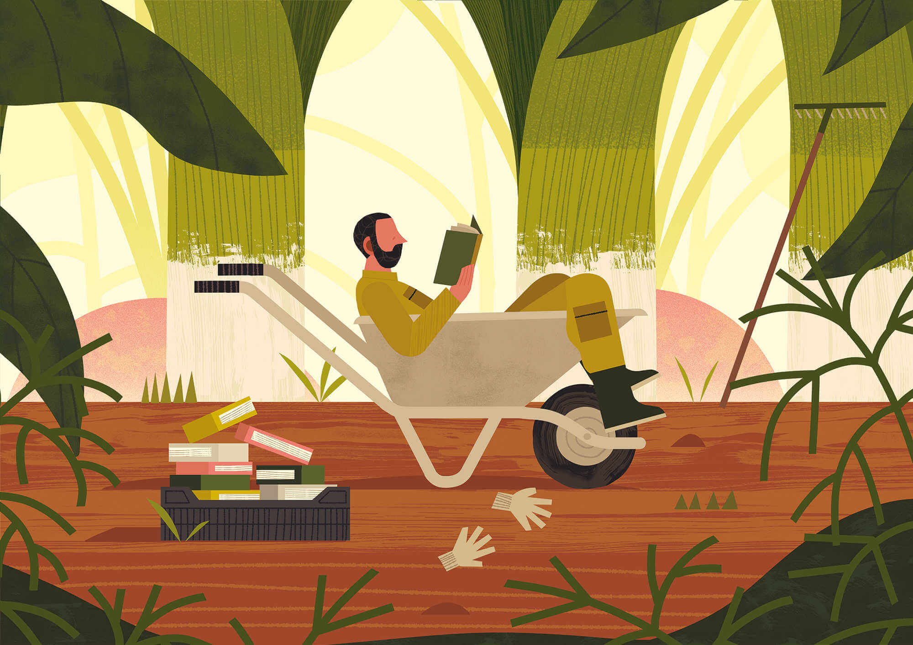

Et si les herbes n’étaient plus ou « bonnes » ou « mauvaises » ?
Le premier jardin est celui de la première sédentarisation des humains. C’est un enclos destiné à protéger ce qu’il y a de plus précieux, de plus fragile et de plus vital : les plantes vivrières*.* Lieu d’accueil à une diversité venue d’ailleurs. Encore aujourd’hui, à la campagne, le jardin c’est le potager.
Au cours de leur pérégrination, les nomades cueillaient les espèces dont ils se nourrissaient, ils savaient où les trouver. Par la sédentarisation sont nées les «importations ». Les humains n’ont cessé d’accélérer le brassage planétaire naturel opéré par le vent, les courants de l’eau, le déplacement des animaux.
Au fil du temps, le jardin s’enrichit d’une diversité ornementale. Il s’impose par la force rassurante de sa beauté. Il renforce sa construction par des règles architecturales qui en définissent le style. La forme prend le dessus, il devient un «tableau », une œuvre d’art.
Qu’en est-il aujourd’hui ?
La diversité en péril nous amène à considérer tout jardin comme un lieu d’accueil aux espèces en fragilité et qui, par la nature du sol et du climat, peuvent néanmoins se développer sans assistance. Rien à voir avec la forme ou le décor. Il s’agit d’un lieu de vie où le comportement des espèces accueillies ne peut être en accord avec une vision fixiste de l’espace. Les plantes à cycle court, les vagabondes, se déplacent sur le terrain au rythme de leur « opportunisme biologique », souvent liés aux caprices du climat.
Pour protéger les espèces, il suffit de respecter leurs variations comportementales. Le jardinier d’aujourd’hui n’est plus l’exécutant d’un plan de géomètre et d’un artiste. Bien qu’il ait la charge évidente d’une « résolution artistique » sur son œuvre éphémère, il devient l’assistant bienveillant des végétaux, des animaux, des champignons et des micro-organismes auxquels les plantes sont liées. Le terme de « mauvaise herbe » disparaît du vocabulaire. Une herbe n’est pas mauvaise, il peut arriver qu’elle soit mal placée. On peut la retirer du lieu où elle semble gêner d’autres plantes que l’on protège mais elle doit demeurer ailleurs dans le jardin. La technique de l’éradication disparaît. Dans un contexte global, ce que l’on recherche est l’équilibre de l’écosystème complexe du vivant et non la monoculture dévastatrice.
Dans ces conditions, le jardin devient le lieu d’un dialogue avec des êtres dont nous connaissons mal les comportements ; mais nous savons qu’il convient de les respecter si nous voulons assurer notre survie. Nous dépendons de cette diversité car nous l’exploitons. Telle est la préséance du vivant, privilège donné à la dimension biologique de nos territoires et non à l’exigence fonctionnaliste, formelle ou compétitive ! Cette attitude oriente nos modes de vie vers une non-dépense des énergies contraires, celles dont on ne cesse de faire usage pour « nettoyer », asservis que nous sommes à une vision hygiéniste ou rentable.
La crise que nous vivons est une démonstration du pouvoir inventif du vivant dans un monde en déséquilibre. Un micro-organisme peut imposer ses lois d’opportunisme biologique jusqu’à freiner son ardeur à la faveur d’un rééquilibrage des écosystèmes. Le jardin de la préséance du vivant est un ensemble instable et dynamique où l’équilibre se réajuste en permanence.
Benjamin Flouw est illustrateur pour la presse, l’édition et la publicité. Inspiré des documentaires animaliers qu’il regardait étant enfant et des livres de botanique qu’il lit en tant qu’adulte, il aime créer des images colorées et géométriques d’animaux, de plantes et de paysages, au cas où ceux-ci viendraient un jour à disparaître.
Benjamin_Flouw.jpeg
GillesClementCreditEricLegret.jpeg
Jardinier, paysagiste, Gilles Clément développe et enseigne les concepts de Jardin en mouvement, de Jardin planétaire, de Tiers-Paysage. Il les applique notamment au parc André Citroën de Paris, au Domaine du Rayol dans le Var, au parc Matisse à Lille, au toit de la base sous-marine de Saint-Nazaire.
(photo par Eric Legret)